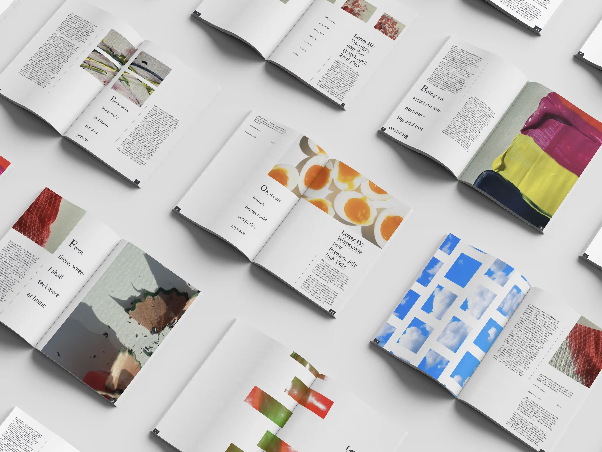
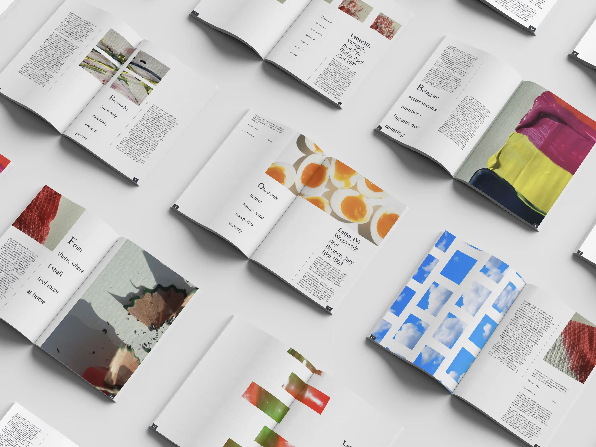

-
Letters To A Young Poet
-
Book Design
-
Adobe InDesign, Adobe Photoshop
-
About
-
The theme I selected for the images is 'patience', as the images depict actions or occurrences
that usually require a long amount of time eg. waiting for paint to dry, the ripening process
of bell pepper, knitting a quilt, etc.
-
Process
-
I created some of the images such as the ones with paint by myself and sourced the other ones
from the Internet.

 
